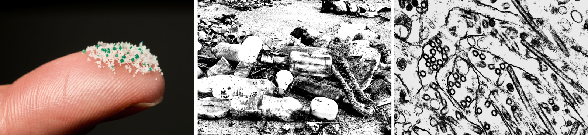
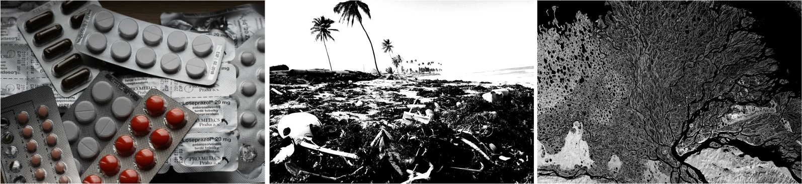
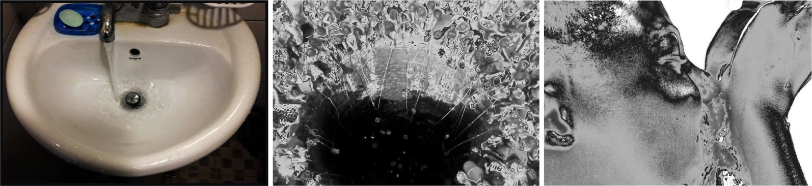

무분별한 자원 낭비와 지켜지지 않는 환경규제.
“양심있는 시민"을 저버린 의무의식으로 환경은 더럽혀지고 있다.
사실 이 말은 형식적으로 느껴질지도 모른다.
환경오염으로 인한 사망, 매년 전 세계 6명 중 1명꼴
27억명이 1년에 한달 정도 물부족 경험
삼림 벌채 중단되지 않으면 100년 안에 모두 사라질수도
매년 1천400만톤의 플라스틱 폐기물 바다로 유입
이 광활한 우주에서 내가 일회용 수저 한 번 안 쓴다고 무엇이 바뀔 것인가?
나비효과란?
나비의 작은 날갯짓처럼 미세한 변화, 작은 차이, 사소한 사건이 추후 예상하지 못한 엄청난 결과나 파장으로 이어지게 되는 현상을 말한다.
혼돈이론에서 초기값의 미세한 차이에 의해 결과가 완전히 달라지는 현상을 뜻한다. 과학 이론이지만 사회현상을 설명하는 광범위한 용어로 사용된다
무시해도 될 만큼 작은 차이나 미약하고 사소한 행위로 시작되었으나 연쇄적이고
점진적으로 조금씩 큰 파장을 일으키면서 결국에는 전혀 예상치 못했던 큰 변화를
초래하는 경우에 이 용어를 사용한다. 아주 사소한 것도 후에 큰 사건으로 비화될
수 있다는 것과 초기치의 미묘한 차이가 증폭되어 엉뚱한 결과를 초래하기도 하므로 장기예측은 그만큼 어렵다는 두가지 의미를 내포한다.
태어난 환경, 살고 있는 곳, 만나는 사람. 공감을 바라기엔 평생 겪은게 다른 우리는 서로를 이해 할 수 없다.
어쩌면 시간만이 모두에게 공평하지 않을까?
똑같은 시간의 기준으로 얼마나 다른 삶을 살 수 있는지 비교 해본다.
바다의 가장 깊은 곳에서부터 우리가 소비하는 음식과 물까지 미세플라스틱은 인간과 지구의 건강에 점점 더 큰 위협이 되고 있다.섭취를 통해 체내로 들어올 수 있고 플라스틱의 원재료 자체의 독성은 낮으나, 제조 시 사용되는 가소제·난연제 등의 첨가제가 추출되거나 환경 중 독성물질이 미세플라스틱 표면에 흡착되어 생물 체내에 축적되는 것이 우려되고 있으며, 현재까지 해산물 섭취로 인체에 유입되는 미세플라스틱에 의한 위해성은 낮다고 판단하지만 플라스틱의 사용량과 환경 배출을 고려할 때 사전 예방적으로 플라스틱과 미세플라스틱 관리가 필요하다.

a waste drug
전 세계 강 25%. 잠재적 독성이 있는 수준
폐의약품은 유효기간이 지났거나 먹다 남은 약을 지칭한다. 땅에 매립되거나 하수구로 버려질 경우 항생물질 등 약 성분으로 인해 토양오염과 수질오염의 원인이 되고 슈퍼버그(슈퍼박테리아)와 같은 항생제 내성균 확산 문제로 생태계와 인류 건강을 위협한다. 폐의약품 그 자체로는 별문제가 없을지라도, 매립 및 하수 처리 과정에서 약의 화학성분이 다른 물질에 반응하면 독성이 증폭되거나 항생제 내성을 가진 초강력 슈퍼버그가 될 수 있는 것이다.

a shortage of water
가정에서 쓰는 물 4분의 1.욕실에서
샤워 시간을 5분에서 3분으로, 2분만 줄여도 한 번 샤워할 때마다 24리터의 물을 절약할 수 있다. 또 욕조에 물을 받아 놓고 목욕하는 것보다는 샤워하는 게 물 절약에 도움이 된다고 생각하기 쉽지만,만약 샤워 시간이 15분 이상이라면 이야기는 달라진다. 15분 간 샤워를 하면 보통 180리터 전후의 물을 사용하게 되는데 샤워 시간을 절반으로 줄이면 물 사용량도 절반으로 줄어드는 효과가 있다.

air pollution
같은 서울 신촌에서도 고작
200m 차이로 공기질이
다를 수 있다.
교통량 때문이다.
공공교통 확충이 곧 기후정의다. 기후위기와 경제 침체, 그리고 사회적 양극화 심화 속에서 대중교통의 공공성을 재고하고 모든 시민의 이동권 보장을 통한 시민권의 확대라는 교통복지 실현을 해나가야 한다는 과제가 우리 앞에 놓여 있다. “이동권이 곧 생존권"이 되는 전장연의 지하철 시위의 목소리가 이를 명확하게 보여준다. 서울시는 대중교통 영역에 대한 지원을 ‘적자'로 치부할 것이 아니라 ‘필수 공공지출'로 인식을 전환하고 그에 따른 새로운 정책을 시행해나야 한다.